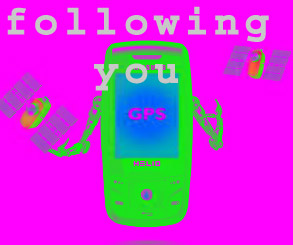

Forming a Film Company One weekend in early January, between trips to Ottawa and planning sessions with NE Division, I made a quick visit to California. I brought along $10,000 in cash, the first of several black-bag deliveries of funds to set up our motion picture company. I arrived on Friday night and met with Jerome and one of his associates in a suite of production offices they had reserved for our purposes on the old Columbia Studio lot in Hollywood. I had invited a CIA contracts officer to the meeting to act as witness to the cash delivery and to follow up as bagman and auditor for the run of the operation. It would take two years to clear all accounts on these matters. Our production company, "Studio Six Productions," was created in four days, including a weekend, in mid-January. Our offices had previously been occupied by Michael Douglas, who had just completed producing The China Syndrome. Jerome and his associate were masters at working the Hollywood system. They had begun applying "grease" and calling in favors even before I arrived. Simple things such as the installation of telephones were supposed to take weeks, but we had everything we needed down to the paper clips by the fourth day. We arranged for full-page ads in Variety and The Hollywood Reporter, the two trade papers most important to any business publicity campaign. We tried to keep Jerome's well-known name hidden, but the "trades" had their reporters hot on our trail, and the word was out that something big was brewing in the industry. When the press discovered that Jerome was connected with this independent production company, interest mounted and more press play followed. Our efforts to keep Jerome's involvement secret actually added credibility to our putative film-making company. Hollywood, moreover, was an ideal place to create and dismantle a major cover entity overnight. The Mafia and many shady foreign investors were notorious for backing productions in Hollywood, where fortunes are frequently made and lost. It is also Picking a Script Once Studio Six Productions was set up, we tackled the problem of identifying an appropriate script. Jerome and I sat around his kitchen table discussing what the theme should be. Because Star Wars had made it big only recently, many science-fiction, fantasy, and superhero films were being produced. We decided we needed a script with "sci-fi," Middle Eastern, and mythological elements. Something about the glory of Islam would be nice, too. Jerome recalled a recent script that might serve our purpose, and he hauled it out of a pile of manuscripts submitted for his consideration. Poster This script fit our purpose beautifully, particularly because no uninitiated person could decipher its complicated story line. The script was based on an award-winning sci-fi novel. The producers had also envisioned building a huge set that would later become a major theme park. They had hired a famous comic-strip artist to prepare concepts for the sets. This gave us some good "eyewash" to add to a production portfolio. We decided to repackage our borrowed script by decorating it with the appropriate logo and title markings. The only copy of the script we needed would be carried by me as a prop to be shown to the Iranians in my role as production manager--and only in the event we were questioned at the airport in Tehran. Green Light Back at the Embassy, I prepared a long cable outlining every detail of the operation as I envisioned it. This was precisely the kind of summary we would send in before launching an exfiltration from a foreign location. It was slightly irregular for me to send this from Ottawa as the plan that the Canadians and I wanted to be approved. I caught hell for that cable when I returned to Washington, but then was told it was a fine piece of work. The plan received final approval within two days, and our materials were en route to Tehran. Green Light Back at the Embassy, I prepared a long cable outlining every detail of the operation as I envisioned it. This was precisely the kind of summary we would send in before launching an exfiltration from a foreign location. It was slightly irregular for me to send this from Ottawa as the plan that the Canadians and I wanted to be approved. I caught hell for that cable when I returned to Washington, but then was told it was a fine piece of work. The plan received final approval within two days, and our materials were en route to Tehran. Green Light Back at the Embassy, I prepared a long cable outlining every detail of the operation as I envisioned it. This was precisely the kind of summary we would send in before launching an exfiltration from a foreign location. It was slightly irregular for me to send this from Ottawa as the plan that the Canadians and I wanted to be approved. I caught hell for that cable when I returned to Washington, but then was told it was a fine piece of work. The plan received final approval within two days, and our materials were en route to Tehran. Green Light Back at the Embassy, I prepared a long cable outlining every detail of the operation as I envisioned it. This was precisely the kind of summary we would send in before launching an exfiltration from a foreign location. It was slightly irregular for me to send this from Ottawa as the plan that the Canadians and I wanted to be approved. I caught hell for that cable when I returned to Washington, but then was told it was a fine piece of work. The plan received final approval within two days, and our materials were en route to Tehran. Green Light Back at the Embassy, I prepared a long cable outlining every detail of the operation as I envisioned it. This was precisely the kind of summary we would send in before launching an exfiltration from a foreign location. It was slightly irregular for me to send this from Ottawa as the plan that the Canadians and I wanted to be approved. I caught hell for that cable when I returned to Washington, but then was told it was a fine piece of work. The plan received final approval within two days, and our materials were en route to Tehran. Green Light Back at the Embassy, I prepared a long cable outlining every detail of the operation as I envisioned it. This was precisely the kind of summary we would send in before launching an exfiltration from a foreign location. It was slightly irregular for me to send this from Ottawa as the plan that the Canadians and I wanted to be approved. I caught hell for that cable when I returned to Washington, but then was told it was a fine piece of work. The plan received final approval within two days, and our materials were en route to Tehran. Green Light Back at the Embassy, I prepared a long cable outlining every detail of the operation as I envisioned it. This was precisely the kind of summary we would send in before launching an exfiltration from a foreign location. It was slightly irregular for me to send this from Ottawa as the plan that the Canadians and I wanted to be approved.  I caught hell for that cable when I returned to Washington, but then was told it was a fine piece of work. The plan received final approval within two days, and our materials were en route to Tehran.